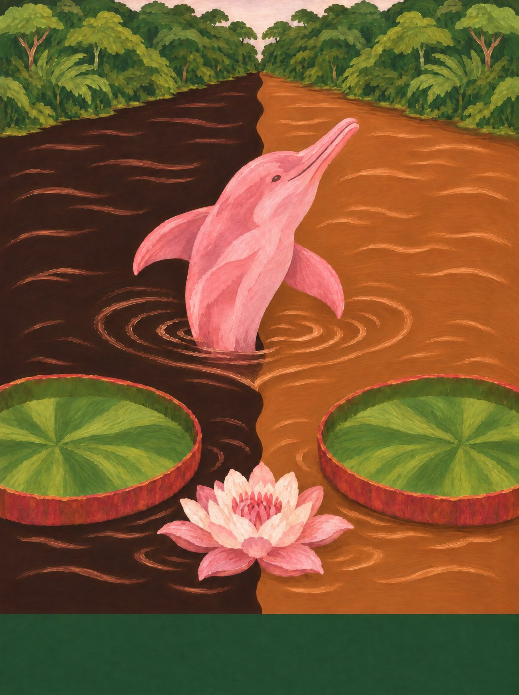
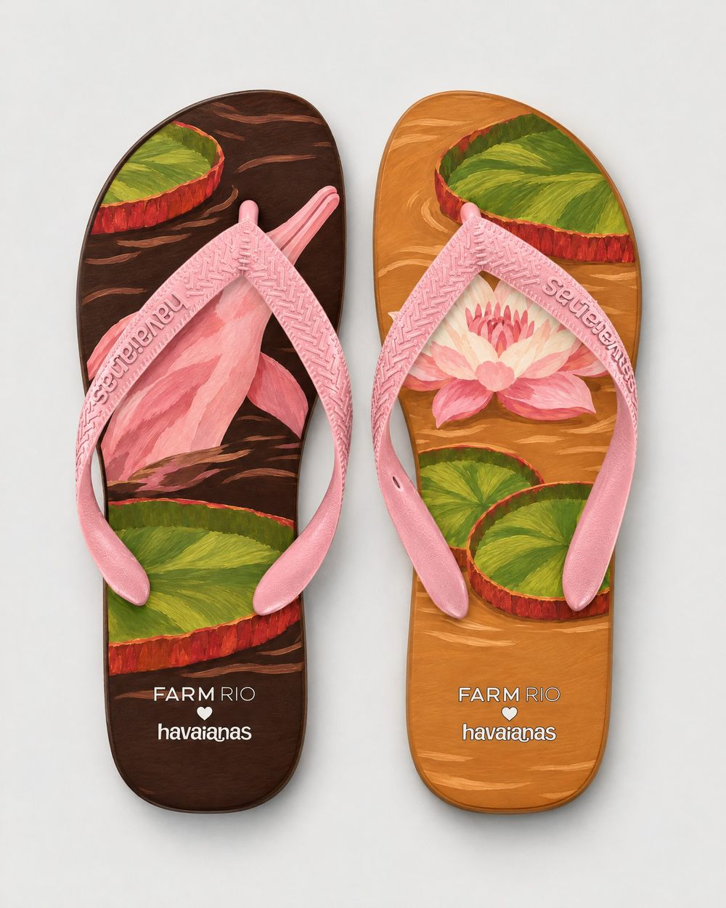
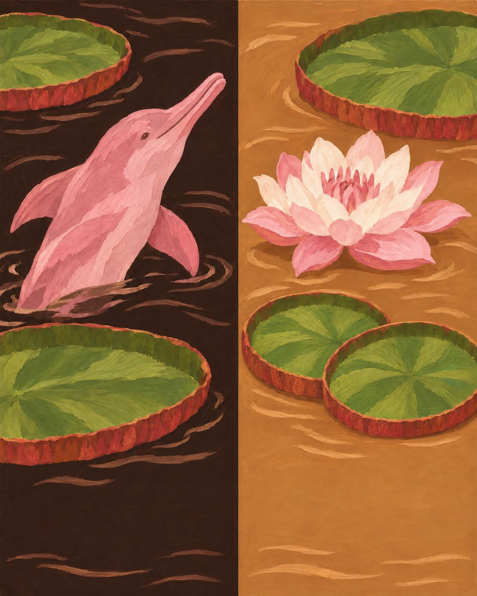
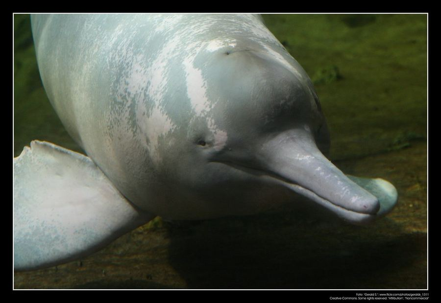
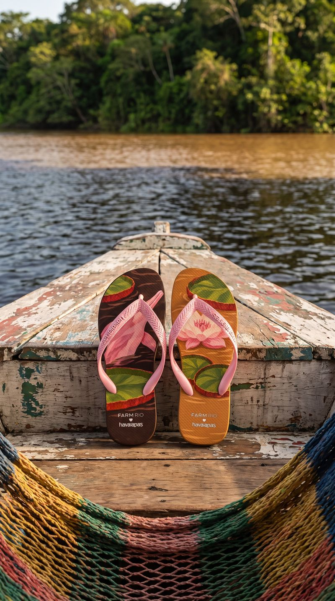
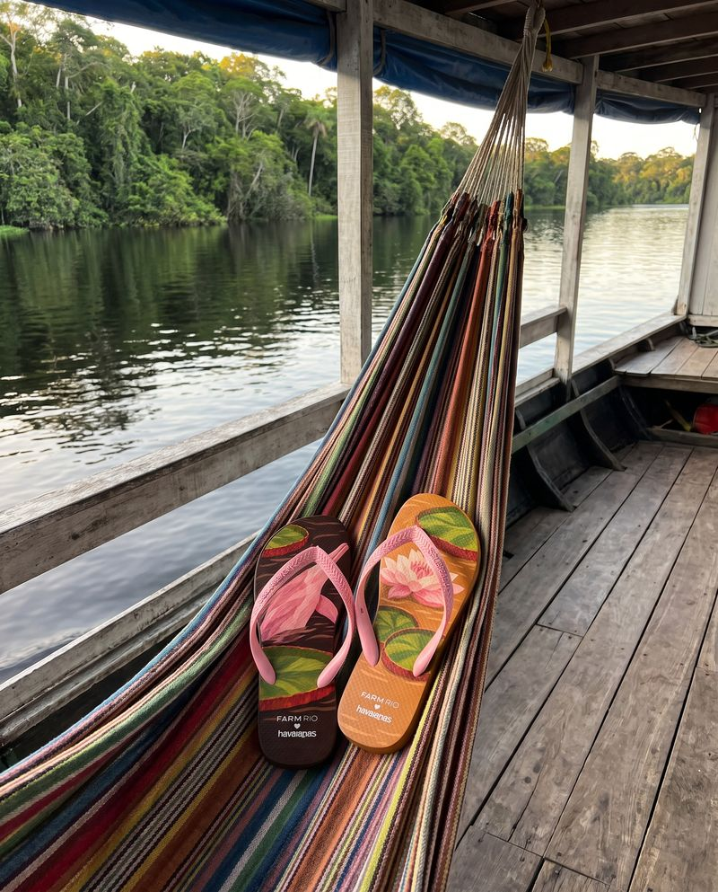

Amazonas
Encontro das Águas
Os dois rios que correm lado a lado sem se misturar perto de Manaus: o par de chinelos é o encontro, um pé de cada água.
07 / 14 · Norte

o coração
Encontre o coração
Ele não está desenhado em cima de nada. Aparece quando os próprios elementos da cena se encontram. Procure na ilustração e toque nele.
♥ os anéis de água em volta do boto


o par
Dois pés, uma história
na palmilha
pé esquerdo com o boto-cor-de-rosa subindo na água escura entre vitórias-régias; pé direito com vitórias-régias e uma flor branca virando rosa na água barrenta.
borracha e tira
café do rio Negro e caramelo do Solimões; tira rosa-boto.
a arte da palmilha
Em díptico

caderno de campo
Manaus nasceu do encontro de dois rios que não se misturam: o Negro, cor de café, e o Solimões, cor de barro, correndo lado a lado por quilômetros. Na cidade, o Teatro Amazonas ergue a cúpula de escamas verde, amarela e azul; no porto, os barcos de recreio partem com redes coloridas penduradas lado a lado. E em junho Parintins se divide em duas cores: o vermelho do Garantido, o boi do coração na testa, e o azul do Caprichoso, o boi da estrela. Na várzea, a vitória-régia abre a folha redonda do tamanho de uma mesa.
trilha · toadas de Garantido e Caprichoso · Vermelho (Chico da Silva) · a buzina do barco saindo do porto de Manaus
A âncora: o Encontro das Águas: o pé esquerdo é o rio Negro, cor de café; o direito é o Solimões, cor de barro.
pesquisa de campo
Na rua, antes do desenho




campanha
O par no lugar


o que ficou de fora
O que a gente evitou
- 01
“Índio” genérico de cocar: estereótipo; povos indígenas têm nome, e só entram com parceria.
- 02
Selva verde genérica com papagaio.
- 03
Escolher um boi só: Parintins é os dois; a estampa homenageia coração e estrela.
fotos de campo deste estado
 ← Maranhão
← Maranhão